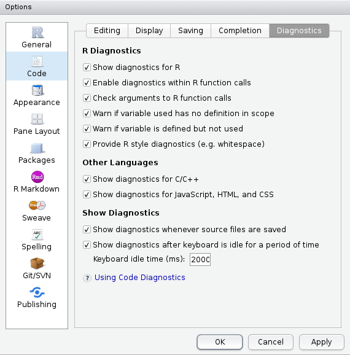

Chapter 2 Good practices
In the following, we will consider some good practices for writing R code. But before we dive into that topic, let us explain why code needs to be clean and efficient. First, if you are working in a team, writing efficient and clean code makes it a lot easier for you colleagues to understand, debug and improve it. If you want your colleagues or collaborators to reuse your code, it should be readable and easy to follow. Second, you can spare your future self a lot of frustration by writing clean code from the beginning. By doing that, you won’t have to ask yourself What the hell am I doing in this function?

2.1 Coding style
Good coding style is like correct punctuation: you can manage without it, butitsuremakesthingseasiertoread.
Please make your code readable by following the available style guides. We recommend you take a look at the tidyverse style guide. In the following, we provide some examples from this guide.
2.1.1 Naming
Be smart with your naming. You won’t believe how often we have seen df <- as.matrix(mtcars) on Stack Overflow. Use meaningful and concise names for you files, data sets, and functions; you will save yourself a lot of time.
For example, consider the following piece of code
dat1 <- tidytuesdayR::tt_load("2020-01-14")[[1]]
dat2 <- dat1[dat1$category == "animal",]
dat3 <- dat1[dat1$strength == 7,]
fct1 <- function(tbl, n = 5) {
tbl <- tbl[complete.cases(tbl$rank),]
tbl[tbl$rank <= n, 2]
}Looking only at this code, do you have any idea what data is stored in dat1, dat2 and dat3? Not really, right? Now imagine, you have 500 lines of code analyzing and visualizing the three different data sets using numerous functions. You would probably get confused about the different data sets and functions quite quick. Now consider the following lines of code
passwords <- tidytuesdayR::tt_load("2020-01-14")[[1]]
password_category <- passwords[passwords$category == "animal",]
password_strength <- passwords[passwords$strength == 7,]
get_popular_passwords <- function(tbl, n = 5) {
tbl <- tbl[complete.cases(tbl$rank),]
tbl[tbl$rank <= n, 2]
}This code is identical to the previous code; except for the names. But it is much easier to read and understand. Let us improve the code even more by adding comments.
# Loading the passwords data
passwords <- tidytuesdayR::tt_load("2020-01-14")[[1]]
# Extracting passwords within the category "animal"
password_category <- passwords[passwords$category == "animal",]
# Extracting passwords with a quality of 7
password_strength <- passwords[passwords$strength == 7,]
# Function: extracts the n most popular passwords
get_popular_passwords <- function(tbl, n = 5) {
tbl <- tbl[complete.cases(tbl$rank),]
tbl[tbl$rank <= n, 2]
}When commenting code, you should focus on explaining the “why” instead of the “what” or “how”. Comments should be in sentence case, and only end with a full stop if they contain at least two sentences.
Suggestions for naming:
- For files names, use underscore separated strings. All words should be lower case, e.g.
fit_models.Rorutility_functions.R(with consideration for operating systems with a case-sensitive file systems). Never have file names that only differ in their capitalization! Avoid using special characters in file names. - For function names, use only lowercase letters and numbers separated by an underscore (
_), e.g.compute_mean. Avoid using dots in function names, as they should be reserved exclusively for the S3 object system. Generally, function names should be verbs. - For variable names, use only lowercase letters and numbers separated by an underscore (
_), e.g.day_1. Avoid re-using names of common functions and variables (such asmean,corT), as this may cause confusion for the readers. Generally, variable names should be nouns.
2.1.2 Spacing
Place a space before and after = when naming arguments in function calls.
Most infix operators (==, +, -, <-, etc.) are also surrounded by spaces, except
- those with high precedence (
^,:,::, and:::,$,[,[[), !!(bang-bang) and!!!(bang-bang-bang) when used in tidy evaluation,- the help operator
?.
# Good
average <- mean((feet / 12) + inches, na.rm = TRUE)
x <- 1:10
base::sum
?mean
# Unfortunate
average<-mean(feet/12+inches,na.rm=TRUE)
x <- 1 : 10
base :: sum
? meanAlways put a space after a comma, and never before (just like in regular English).
For parenthesis, there are three different rules. When parentheses are used in connection to regular function calls, they are not surround by space:
However, when the parentheses are used with if, for, or while, they are surrounded by space:
When the parentheses are used for function arguments, you put a space after the closing parenthesis ):
Finally, the pipe %>% should always have a space before it, and it is usually followed by a new line.
# Good
iris %>%
group_by(Species) %>%
summarize_if(is.numeric, mean) %>%
ungroup() %>%
gather(measure, value, -Species) %>%
arrange(value)
# Unfortunate
iris %>% group_by(Species) %>% summarize_all(mean) %>%
ungroup %>% gather(measure, value, -Species) %>%
arrange(value)We will return to the pipe operator in Chapter 4. The same styling suggestions also hold for the operator that separates ggplot2 layers, +. You will meet this operator again in Chapter 4.
2.1.3 Indenting
Curly braces, {}, define the most important hierarchy of R code. To make this hierarchy easy to see, always indent the code inside {} by two spaces. This should be automatic in RStudio.
# Good
if (y < 0 && debug) {
message("y is negative")
}
if (y == 0) {
if (x > 0) {
log(x)
} else {
message("x is negative or zero")
}
} else {
y ^ x
}
# Unfortunate
if (y < 0 && debug)
message("Y is negative")
if (y == 0)
{
if (x > 0) {
log(x)
} else {
message("x is negative or zero")
}
} else { y ^ x }2.1.4 Long lines
Strive to limit your code to 80 characters per line. This fits comfortably on your screen with a reasonably sized font. If you find yourself running out of room, this is a good indication that you should encapsulate some of the work in a separate function. To change the margin in RStudio go to Tools -> Global Options -> Code -> Display, and set Margin column: to 80.
2.1.5 Other
- Use
<-, not=, for assignment. Keep=for parameters.
Don’t end a line of code with
;, and avoid multiple commands on the same line.Only use
return()for early returns. Otherwise rely onRto return the result of the last evaluated expression. Moreover, return statements should always be on their own line.
# Good
add_two <- function(x, y) {
x + y
}
# Unfortunate
add_two <- function(x, y) {
return(x + y)
}- Use
", not', for quoting text. The only exception is when the text already contains double quotes and no single quotes.
# Good
"Text"
'Text with "quotes"'
'<a href="http://style.tidyverse.org">A link</a>'
# Unfortunate
'Text'
'Text with "double" and \'single\' quotes'- Use
TRUEandFALSEinstead ofTandF.
2.1.6 Code organization
The way the code is organized within a single file significantly impacts the readability.
We suggest to start each file with a comment holding a description of the file, who wrote it,
and when it was last updated. You may want to set a default template that is used each time you open a new .R script. To do this, you have to create a templates folder in AppData/Roaming/RStudio/ and include a default.R file with the desired template.
# Create a template folder
fs::dir_create(path = "~/AppData/Roaming/RStudio/templates")
# Create the file
fs::file_create(path = "~/AppData/Roaming/RStudio/templates/default.R")
# Open the file in RStudio
usethis::edit_file("~/AppData/Roaming/RStudio/templates/default.R")For example, you can add the following comments to default.R.
######################################################################
## Title :
##
## Description :
##
## Author :
##
## Date :
######################################################################
##
## Loading required libraries:########################################Remember to save the changes you made to default.R.
After the comment section, you should load all required add-on packages using library(). This is more transparent than having many library() calls throughout your entire code. Afterwards, any required files should be sourced using source(). Again, this is more transparent than having many source() calls throughout your entire code. Finally, you can start your code. Within your code, use commented lines of -, = or # to break up your file into smaller bits.
2.1.7 Styler
You can use the package styler to correct your style. It even has RStudio Addins. Once you have installed the package using install.packages("styler"), you can format your code according to the tidyverse style guide (or your custom style guide) through the RStudio addin as demonstrated below, or through R functions like style_text(), style_file() or style_pkg().
 In RStudio, you can also use the shortcut Ctrl+Shift+A (Windows and Linux) or Shift+Command+A (Mac)to reformat selected code. We will talk about RStudio shortcuts in the next section (2.2).
In RStudio, you can also use the shortcut Ctrl+Shift+A (Windows and Linux) or Shift+Command+A (Mac)to reformat selected code. We will talk about RStudio shortcuts in the next section (2.2).
2.2 RStudio
Download a recent enough version of RStudio (>= 1.2) and use it!
Learn more about the new features of RStudio at https://rstudio.com/products/rstudio/release-notes/.
RStudio features:
- everything you can expect from a good IDE
- keyboard shortcuts I use
- Ctrl + Space (auto-completion, better than Tab)
- Ctrl + Up (command history & search)
- Ctrl + Click (function source code)
- Ctrl + Enter (execute line of code)
- Ctrl + Shift + A (reformat code)
- Ctrl + Shift + C (comment/uncomment selected lines)
- Ctrl + Shift + K (knit)
- Ctrl + Shift + B (build package, website or book)
- Ctrl + Shift + M (pipe)
- Alt + Shift + K to see all shortcuts…
- Panels (everything is integrated, including Git and a terminal)
- Interactive data importation from files and connections (see this webinar)

- Use code diagnostics:

- RStudio Projects:
- Meaningful structure in one folder
- The working directory automatically switches to the project’s folder
- The File tab displays the associated files and folders in the project
- History of
Rcommands and open files - Any settings associated with the project, such as Git settings, are loaded. Note that you can have a .Rprofile file in the project’s root directory to enable project-specific settings to be loaded each time people open the project.
Read more at https://www.tidyverse.org/articles/2017/12/workflow-vs-script/ and also see chapter Efficient set-up of book Efficient R programming.
2.3 Version control (Git)
2.3.1 Why use Git? You don’t use Git?

Figure 2.1: You don’t use Version Control?
Have you ever:
- Made a change to code, realized it was a mistake and wanted to revert back?
- Lost code or had a backup that was too old?
- Wanted to submit a change to someone else’s code?
- Wanted to share your code, or let other people work on your code?
In these cases, and probably many others, a version control system should make your life easier (see https://stackoverflow.com/a/1408464/6103040).
- Version control for the researcher: don’t do that, use Git

- Version control for the data analyst: reproducible workflow
Also, see https://stackoverflow.com/q/2712421/6103040.
Use version control to work from anywhere

Working with GitHub can be a line on your CV (read more):
A lot of students have said to me later, even first-year undergraduates, that using GitHub has helped them a lot when they went for an internship or a research position interview.
They are able to say, “Oh, I already have worked with GitHub. I am familiar with it. I know how it works.” So I think they are at least able to put that on their CV and go into a situation where there’s a research or data analysis team and say, “Yeah, sure. I am actually familiar with the same tools that you use.”
– Mine Cetinkaya-Rundel, Duke University, RStudio
- Be able to get websites for your packages with pkgdown, for your book (like this one!) with bookdown, for your personal webpage with R Markdown Websites or blogdown.
2.3.2 About Git
Main Git platforms (share your code, collaborate):
- GitHub, documentation (only free for public repositories, now owned by Microsoft)
- GitLab (open source & free)
- Bitbucket (free when you have less than 5 collaborators)
- any server..
4 main commands:
- add: add files to be part of the next commit
- commit: snapshot of your code at a specified point in time (you can and you should use this even when having no internet connection)
- push: merge your local modifications with the main project
- pull: update your local project with the latest version of the main project
Simple (solo) use of git to prevent merge conflicts:
- after opening a project, always pull
- before closing a project, always commit/push
Use git even when you do not have any internet connection! (e.g. on a secure server) Just use commits for version control locally.
How to link between an RStudio project and a GitHub repository?
For Mac users, you might need to use the terminal for git clone, then create the RStudio project from the existing directory. If you have some permission denied for the public key, you might also need to run ssh-agent -s && ssh-add <path_to_public_key> (cf. this SO answer).
2.4 Getting help
2.4.1 Help yourself, learn how to debug
A basic solution is to print everything, but it’s usually not working well on complex problems. A convenient solution to see all the variables’ states in your code is to place some browser() from where you want to check the variables’ states. To debug functions, debugonce() is also very useful.
my_log <- function(x) log(x - 1)
my_fun <- function(a, b) {
# browser()
la <- my_log(a)
lb <- my_log(b)
la + lb
}
my_fun(1, 0)#> Warning in log(x - 1): NaNs produced#> [1] NaNTry to uncomment browser() or use debugonce(my_fun):
Learn more with this book chapter, this other book chapter, this webinar and this RStudio article.
2.4.2 External help
Can’t remember useful functions? Use cheat sheets.
You can search for specific R stuff on https://rseek.org/. You should also read documentations carefully. If you’re using a package, search for vignettes and a GitHub repository.
You can also use Stack Overflow. The most common use of Stack Overflow is when you have an error or a question, you google it, and most of the times the first links are Q/A on Stack Overflow.

You can ask questions on Stack Overflow (using the tag r). You need to make a great R reproducible example if you want your question to be answered. Sometimes, while making this minimal reproducible example, you end up understanding and solving the issue on your own.
If you are confident enough with your R skills, you can take the next step and answer questions on Stack Overflow. It’s a good way to increase your skills, or just to procrastinate while writing a scientific manuscript.
You can also join communities, e.g. join the French-speaking R community or join the R-Ladies community on Slack. These are generally much friendlier and welcoming spaces compared to Stack Overflow.
Useful resources
- Best Coding Practices for R by Grace Hopper